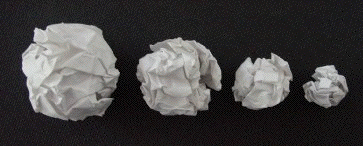

Purpose To determine experimentally the dimension of crumpled paper balls and small bags of beans.
Materials Two sheets each of 8 by 11 paper of three different compositions and weights, a ruler, 64 small dry beans (such as garbanzo or navy beans), clear plastic wrap, the directions and data sheets provided, graph paper or a spreadsheet or a calculator capable of doing logs and linear regression, (optional) a compass, (optional) an accurate weighing device such as a scale or balance capable of weighing small amounts.
Conclusion The logs of the data values from each experiment should fall
approximately on a straight
line whose slope is the mass dimension of the object. That the data points fall near a
straight line in the log-log plot vindicates the power law hypothesis
For the paper balls, the slope of the line, and therefore the dimension, should be between 2 and 3. This value depends on the stiffness of the paper and whether it was reprocessed (crumpled, flattened, and recrumpled), among other factors.
For bean bags, the slope should be close to 3.
Here is a gallery of pictures from a previous workshop.